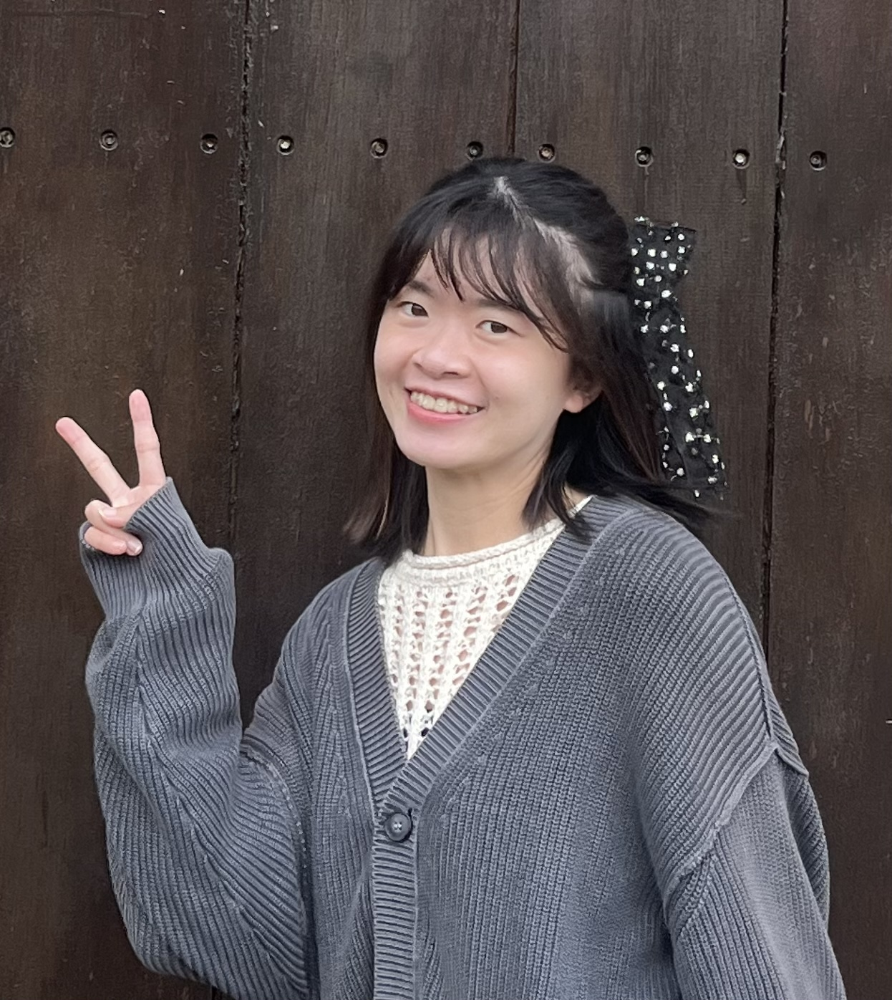

你們的狀況
孩子每次考完試都沉默回家，你問他哪裡不會，他說「不知道」——
這種卡關，不是孩子不夠努力，也不是你不夠關心。
很多時候，卡住的不是題目，而是動機、焦慮，和一套還沒找到的讀書方法。

孩子每次考完試都沉默回家，你問他哪裡不會，他說「不知道」——
這種卡關，不是孩子不夠努力，也不是你不夠關心。
很多時候，卡住的不是題目，而是動機、焦慮，和一套還沒找到的讀書方法。
如果你正在煩惱以下的事：
孩子成績一直卡在某個分數，補習了也沒有明顯改變
孩子對課業充滿抗拒，作業要盯、考前要催，讓親子關係也跟著緊繃
你希望孩子不只是「會考試」，而是能夠自己找到學習的節奏和樂趣
國小升國中的銜接階段，擔心孩子的讀書習慣跟不上
您好，我是羅萱。
我有超過 3 年的家教與陪讀經驗，同時是國立彰化師範大學諮商輔導所碩士畢業生，曾任國小專輔老師。
我和一般家教老師最大的不同是：我能幫你找出孩子真正卡關的原因。
成績沒有進步，有時候是不會解題；但更多時候，是挫折耐受度低、考前焦慮、或是根本不知道「怎麼讀書」。我的諮商背景讓我能快速看出這些隱藏在成績背後的問題，從根本陪孩子一起解決。
數學動機重建
帶過的學生從原本逃避作業、靠抄襲過關，到能獨立思考、準時完成，數學成績提升 40 分以上。最大的進步不在分數，而是他開始願意面對數學了。
全科焦慮排除
協助國小高年級學生從 60 多分穩定進步到 90 多分，同時幫助他克服課業焦慮，從不敢舉手到在課堂上主動發言。
教學理念
學習銜接階段是關鍵期，比起死背，更重要的是建立一套「通用的讀書策略」。我會透過結構化引導，幫孩子建立學習節奏，將被動讀書轉化為主動探索。
確實有進步，也會自己上網找問題，謝謝老師的教導，讓他重新愛上了數學。
很慶幸能遇到老師，在這段時間裡，我們看見她一步步成長，不僅找到適合自己的學習方式，也開始養成主動預習、複習的習慣，更從閱讀與學習中找回興趣與自信。這些改變都離不開老師的專業指導與耐心陪伴。
這段時間很謝謝你幫忙輔導孩子的數學，他們都很喜歡你的教學，相信將來你一定也是一位很優秀的老師。
當孩子開始主動問問題、不再害怕考試的那一刻——
那不只是成績的進步，而是他找回了對自己的信心。
這就是我們一起努力的方向。
不確定適不適合也沒關係～歡迎先私訊聊聊孩子的狀況，我會盡快回覆您。
前往 Messenger 私訊